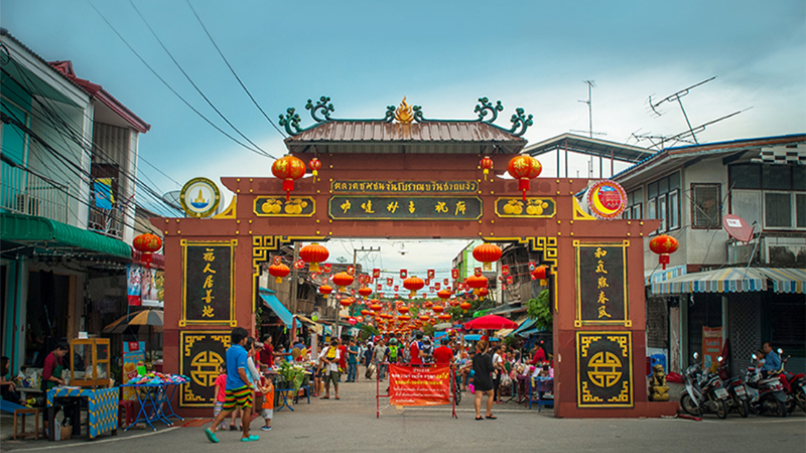

1. เกาะสีชัง

เกาะสีชัง 2 วัน 1 คืน เป็นที่เที่ยวชลบุรี และที่เที่ยวทะเลใกล้ กรุงเทพฯ ที ่ไปเที ่ยวได้ง่าย ๆ ไม่มีรถส่วนตัวก็สามารถไปเที่ยวได้ มีธรรมชาติทางท้องทะเลที่สวยงาม พร้อมทั้งที่พัก สวย ๆ และร้านอาหารสุดอร่อยมากมายให้ได้ไปสัมผัส วันหยุดถ้าไม่รู ้จะไปเที่ยวพักผ่อนหัวสมองที่ไหนดี ลองมาดูตัวเลือกดี ๆ ทางนี้ไหม...เรา จะชวนไปเที่ยวเกาะสีชัง อำเภอศรีราชา จังหวัดชลบุรี ในแบบฉบับ 2 วัน 1 คืน เพราะที่นี่สามารถเดินทางง่ายดาย ไม่มีรถส่วนตัวก็สามารถไปเที่ยวได้ง่าย ๆ อีกทั้งบรรยากาศยังเงียบสงบ มีกิจกรรมและ แหล่งท่องเที่ยวที่น่าสนใจมากมาย
2. บางแสน
หาดบางแสน หาดที่มีถนนตัดเลียบชายหาด ข้างทางเรียงรายไปด้วยร้านอาหาร และที่พัก ตอบโจทย์คนที่อยากมานั่งเล่นนอนเล่น รับลม ทะเลใต้ร่มเงาต้นมะพร้าวบริเวณชายหาด พร้อมทานอาหารทะเล ไก่ย่าง ส้มตำ บอกเลยว่าฟินสุด ๆ ส่วนใครเป็นสายกิจกรรม หาด บางแสนก็เป็นอีกสถานที่ที่แนะนำเลยค่ะ เพราะนอกจากจะได้เล่นน้ำทะเลแบบเต็มอิ่มแล้ว เขายังมีกิจกรรมให้เลือกใช้บริการ มากมาย ทั้งบาบาน่าโบ๊ท จักรยาน และเรือเจ็ตสกี เรียกได้ว่าตอบโจทย์ทุกไลฟ์สไตล์
3. ตลาดจีนโบราณบ้านชากแง้ว
พาเที่ยว ตลาดจีนโบราณอายุมากกว่า 100 ปี ที่นี่เคยเป็นย่านการค้าที่รุ่งเรืองมากในอดีต ปัจจุบันกลับมามีชีวิตชีวาอีกครั้ง จนกลายเป็นแหล่งท่องเที่ยวทางวัฒนธรรมและประวัติศาสตร์ ให้ได้ไปเรียนรู้วิถีชุมชนจีน โบราณ สัมผัสบรรยากาศย้อนยุค พร้อมแนะนำอาหารและขนมอร่อย ๆ แบบฉบับต้นตำรับ
4.หาดน ้าใส

เป็น หาดทรายทีามีเขตพื้นที่ตำบลแสมสาร อำเภอสัตหีบ จังหวัดชลบุรี น ้าใสเห็นฝูงปลาเป็นจำนวนมาก หาดทรายขาวละเอียดสะอาด มีเจ้าหน้าที่ดูแลชายหาดที่ พร้อมให้บริการฉุกเฉินได้ตลอดเวลา นอกจากเปิดบริการใหผู ้คนมาเล่นน้ำทะเลฟรีแล้ว ยังมีบริการดำน้ำถ่ายรูปกับปลาราคาคน ละ 250 บาท
5. หอพระพนัสบดี

ตั้งอยู่ กลางสระน้ำ ตรงข้ามศาลาเทศบาลเมืองพนัสนิคม เป็นพระพุทธรูปยืนปางประทานพร สมัยทวารวดีที่สง่างามมาก อายุกว่าพันปี ตั้งอยู่กลางสระน้ำ ตรงข้ามศาลาเทศบาลเมืองพนัสนิคม ถนนเมืองเก่า ซอย 1 เป็นที่ ประดิษฐานพระพนัสบดีซึ่งจำลองจากองค์จริง เป็นพระพุทธรูปยืนปางประทานพร สมัยทวารวดีที่สง่างามมาก อายุประมาณ 1,200-1,300 ปี แกะสลักอย่างประณีตจากหินดำเนื้อละเอียด ประทับยืนบนหลังสัตว์ที่มีลักษณะผสมกัน ระหว่างครุฑ โค และหงส์